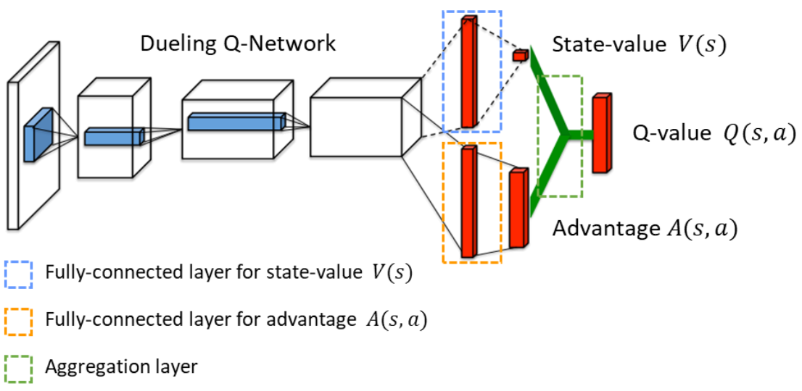

基于价值的算法（Value-Based）
在策略评估时可以通过时序差分方法估计 vπ(s)。但是在环境模型未知时无法通过评估的 vπ(s) 进行策略提升（转移概率和奖励函数未知，无法计算 qπ(s, a)），因此可以利用时序差分等方法直接估计 qπ(s, a) 并进行策略提升，最终学习到最优动作价值 q⋆(s, a)，通过最优动作价值可以恢复出最优策略 π⋆。
SARSA
单步 SARSA
SARSA 算法通过时序差分和单步转移 (st, at, rt+1, st+1, at+1) 来直接对 qπ(s, a) 进行估计：
q(st, at)=q(st, at)+α[δt(1)rt+1+γq(st+1, at+1)−q(st, at)]
事实上对策略进行提升不需要基于完全估计的动作价值，在策略评估不完全的情况下即可进行贪婪的策略提升 π(s)←π+(s)∈argmaxaqπ(s, a)，SARSA 等算法交替地进行环境交互、策略评估和策略提升。
同时为了更加准确地估计动作价值，需要在序列中获得不同的状态价值对 (s, a)。为了避免贪婪策略无法访问某些状态价值对，可以改进为 ϵ-greedy 策略，即有 ϵ 的概率在动作空间中进行随机采样：
π+(a∣s)=⎩⎪⎪⎪⎨⎪⎪⎪⎧∣A∣ϵ+(1−ϵ)∣A∣ϵa∈argmaxaq(s, a)a∈/argmaxaq(s, a)
需要注意的是，SARSA 算法中的 st 为给定的状态，at 基于 st 采用行为策略采样得到，执行后 rt+1 和 st+1 从环境中采样得到，而用于更新 q 值的 at+1 的目标策略与行为策略相同，这种算法被称为同策略算法。
多步 SARSA
类似地，基于多步 TD 方法可以平衡估计的偏差和方差，加速 SARSA 算法的收敛速度，其更新方式为：
q(st, at)=q(st, at)+α[δt(k)rt+1+γrt+2+⋯+γkq(st+k, at+k)−q(st, at)]
SARSA(λ)
类似地，基于 TD(λ) 方法可以得到 SARSA(λ) 算法，其中资格迹需要变为 e(s, a) 的形式，更新方式为：
et+1(s, a)←γλet(s, a)+1(s=st+1, a=at+1)
每个时间步上 q(s, a) 的更新方式为 q(s, a)←q(s, a)+αδtet(s, a)。
Q-Learning
单步 Q-Learning
与 SARSA 不同的是，Q-Learning 的时序差分更新方式为：
q(st, at)←q(st, at)+α[δt(1)rt+1+γamaxq(st+1, a)−q(st, at)]=q(st, at)+α[rt+1+γq(st+1, a^)−q(st, at)]
其中，st 为给定的状态，at 基于 st 通过行为策略采样得到，执行后 rt+1 和 st+1 从环境中采样得到，而用于更新 q 值的 a^ 的目标策略（argmaxaq(st+1, a)）则不同于行为策略，这种算法被称为异策略算法。
多步 Q-Learning
类似地，基于多步 TD 方法得到多步 Q-Learning 算法，其更新方式为：
q(st, at)←q(st, at)+α[δt(k)rt+1+γrt+2+⋯+γkamaxq(st+k, a)−q(st, at)]
Q(λ)
由于 Q-Learning 为异策略算法，在目标策略采样的 a^ 不同于得到 st+1 后行为策略采样的 at+1 时需要对资格迹 e(s, a) 进行重置操作（置零），具体的更新方式为：
et+1(s, a)=[γλet(s, a)+1(s=st+1, a=a^)]⋅I(at+1=a^)
每个时间步上 q(s, a) 的更新方式为 q(s, a)←q(s, a)+αδtet(s, a)。
DQN
Origin DQN
在状态空间较大或状态空间连续时无法通过 q 表来表示动作价值函数，可以采取深度神经网络来拟合出 q 函数 qw(s, a)，其中用于拟合 q 函数的神经网络被称为 Q 网络：

网络的输入为状态 s∈S，输出为动作价值向量 qw(s, a)∈R∣A∣。Q 网络的损失函数即 TD 误差的平方，例如基于 Q-Learning 的 DQN 的优化问题为：
wmin2n1i=1∑b[qw(si, ai)−(ri+γamaxqw(si′, a))]2
Dueling Net
通过状态价值函数 v(s) 和动作价值函数 q(s, a) 定义优势函数 d(s, a)=q(s, a)−v(s)，最优优势函数为：
d⋆(s, a)=q⋆(s, a)−v⋆(s)
最优优势函数满足：
amaxd⋆(s, a)=amaxq⋆(s, a)−v⋆(s)=0
因此有 q⋆(s, a)=v⋆(s)+d⋆(s, a)=v⋆(s)+d⋆(s, a)−maxad⋆(s, a)。Dueling Net 不直接对动作价值 q 进行建模，而是分别建模状态价值 v 和优势函数 d，再进行加和得到动作价值 q：
qw, α, β(s, a)=vw, α(s)+dw, β(s, a)

其中参数 w 为 V 网络和 D 网络的共享参数，通常表现为用于提取特征的前几层网络层。由于以上建模方式会导致 v⋆ 和 d⋆ 建模的不唯一性（v+C+d−C），因此利用最优优势函数的性质将加和改写为：
qw, α, β(s, a)=vw, α(s)+dw, β(s, a)−a′maxdw, β(s, a′)
在实际应用中还可以使用平均操作来代替最大化操作，实验证明这种方案的效果更好：
qw, α, β(s, a)=vw, α(s)+dw, β(s, a)−∣A∣1a′∑dw, β(s, a′)
对比标准的 DQN 来说，Dueling Net 能够更好地建模在某些状态下 q⋆(s, a) 受不同动作 a 影响较小的环境，同时学习的状态价值函数 v 会同时影响所有动作的 q 值，更新效率较高。
Noisy Net
为了提升模型的鲁棒性，并且提升模型的探索性能，可以在 DRL 模型中加入噪声，将原有的参数表示为：
w=μ+σ∘ξ
其中 μ 和 σ 是需要学习的参数，参数的随机噪声之间相互独立并且服从标准正态分布 ξi∼N(0, 1)。例如对 DQN 加入噪声可以得到 Noisy DQN 模型，其中 ξ 在每次交互和学习时都需要进行随机采样：
qw(s, a)⇒qμ, σ; ξ(s, a)=qw′=μ+σ∘ξ(s, a)
与环境进行交互获取经验时不需要再使用 ϵ-greedy 策略（本身带有随机性），可以直接采取行为策略：
at=π(st)∈aargmaxqμ, σ; ξ(st, a)
在训练时每次从经验回放缓冲区中随机抽样一个单步转移四元组 (s, a, r, s′)，利用 TD 误差计算梯度并更新参数 μ、σ。而在训练完成进行决策时不再需要噪声，此时可以直接将 ξ 取做 0，转化为标准的 DQN。
其他方法与技巧
经验回放
为了更好地学习 Q 值，可以加入经验回放缓冲区，将交互数据 (s, a, r, s′) 存储在缓冲区并在训练时进行随机采样得到一个批次的训练样本用于训练，既能够使样本满足独立假设，又可以提高样本利用效率。为了平衡常见样本和少见样本的学习，可以在经验回放的基础上加入非均匀抽样，抽样的概率满足：
pi∝∣δi∣+ϵi∈{1, 2, ⋯, b}
其中 δi 为样本 (si, ai, ri, si′) 的 TD 误差，常数 ϵ 为很小的正数，防止抽样概率为 0。调整抽样概率的同时也应该设置不同的学习率，为了抵消掉由抽样概率差异带来的预测偏差，可以设置学习率为：
αi=(bpi)βα
其中 α 为总体学习率，β∈(0, 1) 为超参数。使用这种优先经验回放的方式可以增加少见样本的利用效率。但是经验回放方法只适用于异策略算法（目标策略不同于行为策略，行为策略的经验可以重复用于目标策略的训练），对于同策略算法则不能使用过时的目标策略收集到的经验。
非均匀高估问题
假设在 Q-Learning 中最终估计得到的动作价值 q(s, a)=q⋆(s, a)+ϵ，其中 ϵ(s, a) 为相互之间独立的均值为零的随机噪声。这种估计虽然是无偏的 Eϵq(s, a)=q⋆(s, a)，但是最大动作价值的期望则会产生高估：
Eϵamaxq(s, a)≥amaxq⋆(s, a)
以上不等式的证明如下：给定一组独立且期望相同的随机变量 X1, X2, ⋯, Xn，定义随机变量函数 ϕ(x)：
ϕ(x)=max{x1+c1, x2+c2, ⋯, xn+cn}
其中 ci 为常数，考虑 ∀ x1, x2∈Rn，ϕ(x) 满足：
ϕ(λx1+(1−λ)x2)=imax(λxi(1)+(1−λ)xi(2)+ci)=imax(λ(xi(1)+ci)+(1−λ)(xi(2)+ci))≤λimax(xi(1)+ci)+(1−λ)jmax(xj(2)+cj)=λϕ(x1)+(1−λ)ϕ(x2)
因此 ϕ(x) 为凸函数，因此通过 Jasen 不等式可得
Exϕ(x)≥ϕ(Exx)=imax(Exi+ci)=μx+imaxci
利用这一结论可以证明 Q 值的高估现象
Eϵamaxq(s, a)=amax(q⋆(s, a)+ϵ(s, a))≥μϵ+amaxq⋆(s, a)=amaxq⋆(s, a)
而在 Q-Learning 的自举学习会导致最大化操作的高估偏差的传播和积累，即：
- 假设在某一步训练中 q(st+1, at+1) 高（低）估了真实的 q⋆(st+1, at+1)
- TD 目标 gt(1)=rt+1+maxaq(st+1, a) 高（低）估了真实的 q⋆(st, at)
- 被更新的 q(st, at)←q(st, at)+α(gt(1)−q(st, at)) 高（低）估了真实的 q⋆(st, at)
因此自举的学习方式会导致最大化操作的高估偏差的传播和积累。同时由于不同的状态价值对 (s, a) 出现的频率不同，因此会产生非均匀的高估，导致最终恢复出的策略不可靠。
Target Q
考虑到原始的 Q-Learning 算法存在由自举带来的偏差，以及 Q 表（网络）的更新带来的目标的不稳定性，可以加入额外的一个目标 Q 表 q~(s, a) 或 Q 网络 q~w−(s, a) 用于计算 TD 目标，从而切断自举：
gt(1)=q(st, at)−(rt+1+amaxq~(st+1, a))
并且目标 Q 表（网络）q~(s, a) 的值（参数）会间隔若干步与训练 Q 表（网络）q(s, a) 进行同步，以此提高算法稳定性。同时在同步时可以采用软更新，例如目标网络参数 w− 的同步方式可以设置为：
w−←τw−+(1−τ)wτ∈(0, 1)
Double Q
由于 Q-Learning 算法中训练时的最大化操作会产生对 Q 值的过高估计问题。Double Q 同时利用目标 Q 表（网络） q 和训练 Q 表（网络） q~ 来估计最优策略的动作价值 maxaq⋆(s, a)，具体的优化目标为：
rt+1+γq~(st+1, aargmaxq(st+1, a))
与 Q-Learning 的区别在于 a^=argmaxaq(st+1, a)=argmaxaq~(st+1, a)，其他算法逻辑则保持一致。由于 q~(st+1, argmaxaq(st+1, a))≤maxaq~(st+1, a)，因此可以缓解 Q 值高估问题。
| 算法 |
选择 |
求值 |
自举偏差传播问题 |
最大化高估问题 |
| Q-Learning |
a^=argmaxaq(st+1, a) |
gt(1)=q(st+1, a^) |
√ |
√ |
| Target Q |
a^=argmaxaq~(st+1, a) |
gt(1)=q~(st+1, a^) |
× |
√ |
| Double Q |
a^=argmaxaq(st+1, a) |
gt(1)=q~(st+1, a^) |
× |
× |